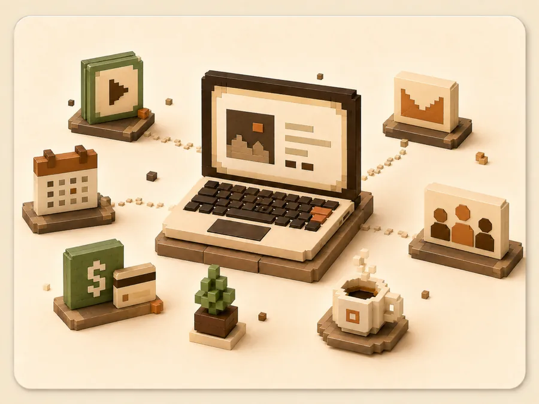
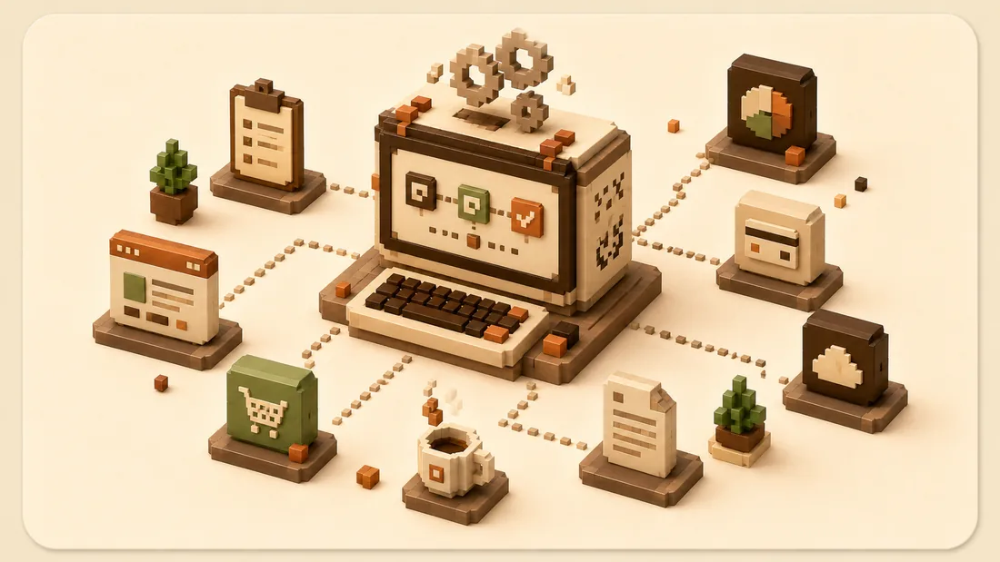
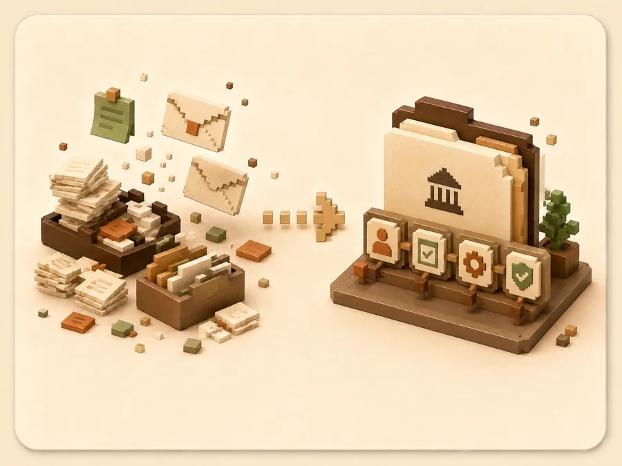
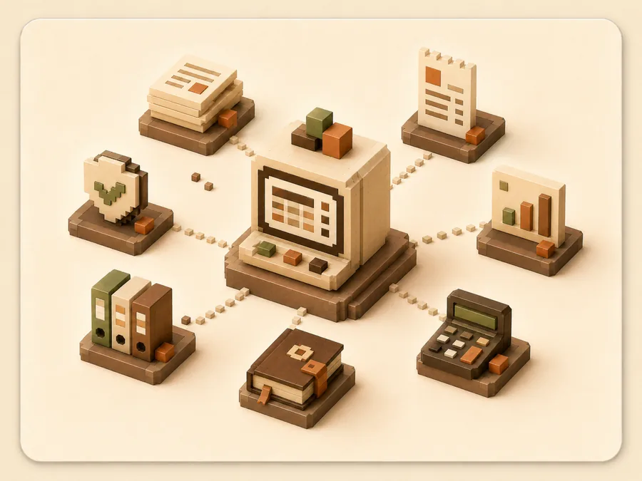
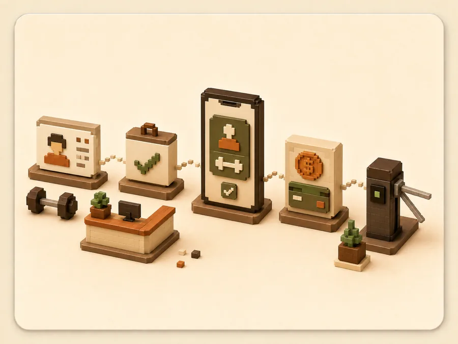

Startup SaaS
Cursos, agenda y cobros en el sitio del creador, con un agente de WhatsApp que atiende.
Software factory · Santiago de Chile
Me cuentas qué necesitas, cerramos el alcance en una llamada y te lo dejo funcionando en producción, con usuarios reales entrando. Sin equipo de cinco ni tres meses de reuniones.
Trabajo con fundadores que no programan.

Qué es un espresso
La mayoría de las ideas no necesitan una plataforma. Necesitan una cosa que funcione y que puedas mostrarle a alguien esta semana. Son tres pasos, y ninguno es una reunión de coordinación.
Escribes abajo qué quieres construir, en tus palabras. No necesitas términos técnicos ni tenerlo pensado entero: para eso está el paso 2.
Hablamos una vez. Te digo qué haría, qué dejaría fuera y qué cuesta. Si no me convence que esto te sirva, te lo digo y no seguimos.
Te lo entrego andando: dominio, servidor, base de datos, correos y pagos. El código en tu repositorio y las cuentas a tu nombre.
Lo que ya salió

Cursos, agenda y cobros en el sitio del creador, con un agente de WhatsApp que atiende.

Trámites que vivían en planillas y correos, hoy en un flujo único y auditable.

Contabilidad PYME conectada al SII: documentos electrónicos, F29 y remuneraciones.

Socios, planes, asistencia y cobros en un solo lugar, con control de acceso en recepción.
Por qué sale rápido
Construyo con IA todos los días y ya la tengo corriendo en sistemas con usuarios pagando. No es una demo que vi en un video: es cómo trabajo.
Uso lo mismo que ya tengo andando en producción. Nada nuevo que probar contigo, nada que después nadie sepa mantener.
Programas que respaldan a Mocca, el producto que construyo y opero:
Preguntas
Depende del alcance, y por eso no hay un precio en esta página: prefiero mirar lo tuyo antes de tirar un número. Después de la llamada te llega el alcance por escrito con el precio cerrado. Si no calza, no seguimos y no cuesta nada.
Tuyo. Repositorio a tu nombre, servidores y cuentas a tu nombre, sin licencias mías ni permisos que dependan de mí. Si mañana quieres que otro siga, puede.
Te entrego andando, con lo mínimo documentado para que otra persona lo tome. Si quieres que siga yo, se conversa como un pedido nuevo. No te amarro a una mensualidad para que la cosa siga prendida.
Nada técnico. Con que sepas quién va a usarlo y qué tiene que poder hacer, alcanza. El resto (dominio, servidor, pagos, correos) lo dejo funcionando yo.
Es con quien más trabajo. Explícamelo como se lo contarías a un amigo; traducirlo a un sistema es mi parte del trato.
Pide tu espresso
Se abre WhatsApp con tu pedido escrito. Lo lees, lo mandas y te respondo yo.
Así parte la conversación
"Necesito que mis alumnos puedan reservar y pagar online."
Perfecto. Te propongo un flujo chico y te digo qué dejaría fuera.